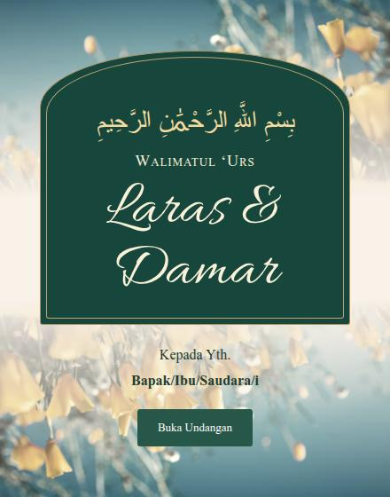
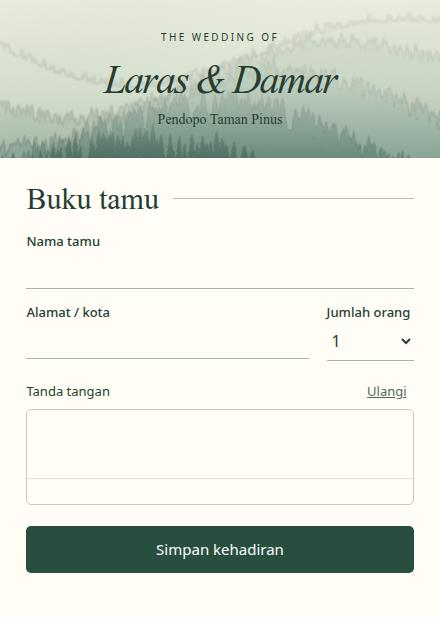
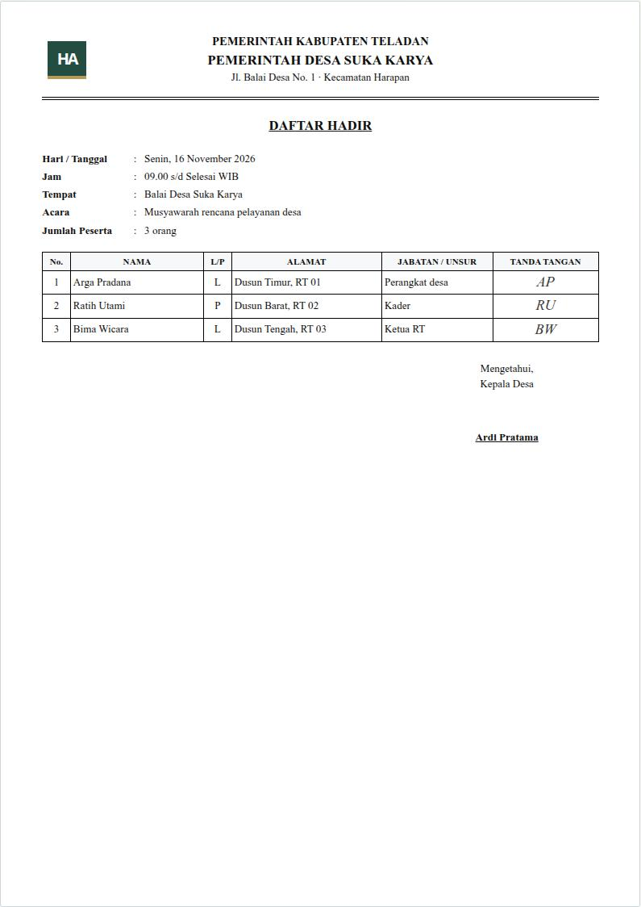
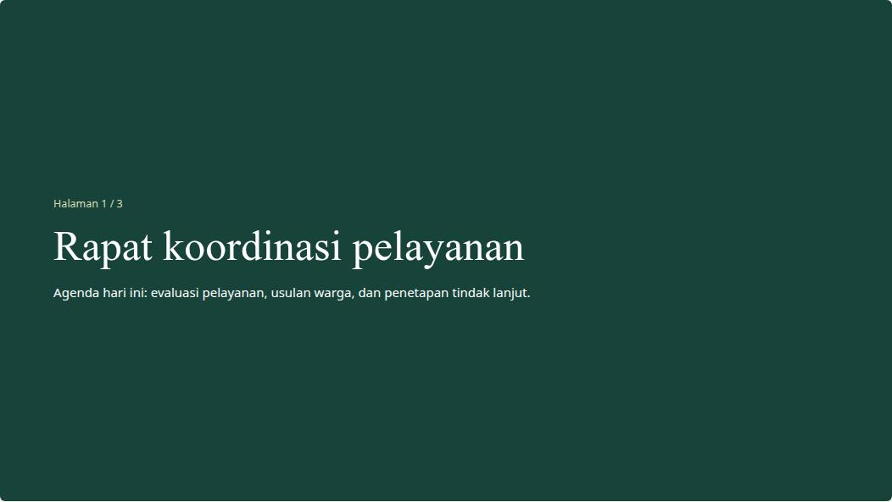

Undangan digital & RSVP
Undangan atas nama tamu dengan tiga pilihan sampul, isi Islami atau umum, dan konfirmasi jumlah orang yang akan hadir.

Undangan atas nama tamu dengan tiga pilihan sampul, isi Islami atau umum, dan konfirmasi jumlah orang yang akan hadir.

Tamu memindai QR di meja penerima, mengisi nama, dan menandatangani kehadiran. Panitia melihat jumlah tamu yang sudah datang.

Lembar A4 berisi identitas kegiatan, peserta, dan tanda tangan. Arsip demo tersimpan di browser masing-masing.

Operator mengganti slide, peserta mengikuti materi dari HP lewat QR. Coba dengan dua perangkat.